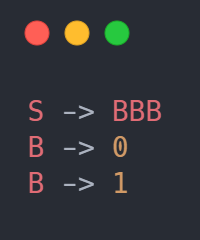
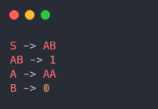
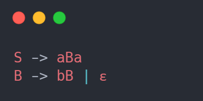
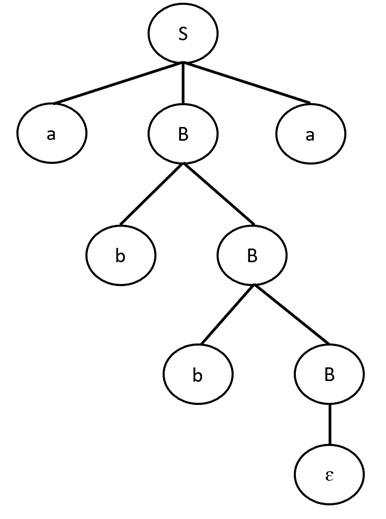

Definisi Context Free Grammars
Context Free Grammars(CFG) adalah tata bahasa yang memenuhi properti tertentu. Dalam ilmu komputer, tata bahasa menjelaskan bahasa. Khususnya, CFG menggambarkan bahasa formal.
Bahasa formal hanyalah satu set(istilah matematika untuk kumpulan objek) string(urutan simbol ... sangat mirip dengan penggunaan kata "string" pada pemrograman). Contoh sederhana dari bahasa formal adalah himpunan semua string biner dengan panjang 3 bit, {000, 001, 010, 011, 100, 101, 110, 111}.
Grammars bekerja dengan menentukan transformasi yang dapat Kamu buat untuk membuat string dalam bahasa yang dijelaskan oleh grammar. Grammars akan menjelaskan bagaimana mengubah simbol awal (biasanya S) menjadi beberapa string simbol. Grammar untuk bahasa yang diberikan sebelumnya adalah:
Maksud dari grammar diatas adalah, bahwa S dapat diganti dengan BBB, dan B dapat diganti dengan 0, dan B dapat diganti dengan 1. Jadi untuk menyusun string 010 kita dapat melakukan S -> BBB -> 0BB -> 01B -> 010.
Context Free Grammars hanyalah grammar di mana hal yang Anda ganti (bagian kiri panah) adalah simbol "non-terminal" tunggal. Simbol non-terminal adalah simbol apa pun yang Kamu gunakan dalam grammar yang tidak dapat muncul di string akhir Anda. Dalam grammar di atas, "S" dan "B" adalah simbol non-terminal, dan "0" dan "1" adalah simbol "terminal".
Grammar diatas bukanlah context free karena mengandung aturan seperti AB -> 1 yang memiliki lebih dari satu simbol non-terminal di sebelah kiri.
Pemanfaatan Context Free Grammar
Parsing
Context Free Grammar ( CFG ) menjadi dasar dalam pembentukan suatu parser/proses analisis sintaksis. Bagian sintaks dalam suatu kompilator kebanyakan di definisikan dalam tata bahasa bebas konteks. Pohon penurunan ( derivation tree/parse tree) berguna untuk menggambarkan simbol-simbol variabel menjadi simbol-simbol terminal setiap simbol variabel akan di turunkan menjadi terminal sampai tidak ada yang belum tergantikan.
Contoh diberikan sebuah CFG seperti dibawah ini.
Penyelesaian :
Pada CFG tersebut kita dapat melihat aturan produksi S hanya ada 1 yaitu S dapat diderivasi menjadi aBa. Disisi lain aturan produksi B memiliki 2 pilihan aturan yaitu B dapat diderivasi menjadi bB atau empty string (epsilon). Seperti yang kita ketahui bahwa CFG memiliki symbol terminal dan non-terminal (variable). Simbol non-terminal pada grammar tersebut adalah S dan B, sedangkan symbol terminal adalah a, b dan juga ada empty production. Ketika proses parsing mencapai symbol terminal maka derivasi tidak dapat dilakukan lagi untuk terminal tersebut.
Jika terdapat sebuah input string abba dan kita ingin melakukan pengecekan apakah input tersebut sudah sesuai dengan aturan produksi yang kita miliki, maka kita dapat mencoba untuk membuat parse tree. Contoh parse tree yang dapat terbentuk dari CFG diatas adalah seperti gambar dibawah ini.
Kita akan memulai membuat syntax tree dari Start symbol. Pada umumnya start symbol akan diletakkan dipaling atas dari sebuah CFG. Pada contoh diatas start symbol kita adalah S yang akan diderivasi menjadi aBa (karena hanya ada 1 aturan jadi kita tidak bisa memilih aturan lainnya). Kita akan melakukan derivasi menggunakan left-most derivation. Karena node paling kiri merupakan node terimal symbol yang tidak dapat diderivasi maka kita akan melanjutkan dengan node berikutnya yaitu B. B dapat diderivasi menjadi bB atau ɛ. Jika kita memilih aturan ke 2 (derivasi menjadi ɛ) maka input string yang akan diterima adalah aa, bukan abba. Oleh karena itu kita harus memilih aturan yang pertama yaitu B diderivasi menjadi bB. Proses terus dilakukan sampai mendapatkan hasil terminal symbol yang sama dengan input string. Jika sebuah input string tidak dapat dibentuk syntax tree nya maka berarti string tersebut tidak sesuai dengan grammar yang ada (syntax error).